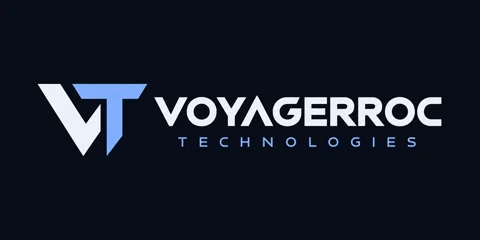
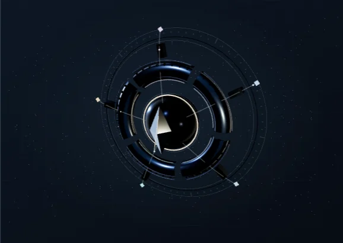

Evidence Intelligence
Belge ve çalışma örnekleriyle aday değerlendirme.
Belgeler, çalışma örnekleri ve değerlendirme aynı bağlamda.

Si / PRODUCT ENGINEERING
Voyagerroc Technologies, web ve mobil uygulamalar geliştiren bağımsız bir yazılım markasıdır. PayRadar, LaserDeck PTT ve EİP; SaaS ürün çalışmaları ve Si destekli iş akışlarıyla birlikte portföyün odağını oluşturur.

ÜRÜN PORTFÖYÜ / ÖNE ÇIKANLAR
Kanıt değerlendirme, ödeme takibi, yakın mesafe iletişim, kaynak araştırması ve tesis yönetimi.
Kaydır. Sistemleri keşfet.
Evidence Intelligence
Belgeler, çalışma örnekleri ve değerlendirme aynı bağlamda.
PayRadar
Düzenli ödemeler ve cihazdaki veri kontrolü.
LaserDeck PTT
İki Android telefon arasında Bluetooth üzerinden bas-konuş, sesli arama, mesaj ve fotoğraf aktarımı.
Pharos Onion Researcher
Kayıtlar, varlık ilişkileri ve zaman içindeki değişimler.
Bungalow OS
Rezervasyon, bakım ve onay süreçleri.
01 / ÜRÜNLER & PLATFORMLAR
Ödeme takibi, kanıta dayalı işe alım, Bluetooth iletişim, araştırma ve tesis operasyonları. Her ürünün kullanım alanı, teknik kapsamı ve mevcut aşaması kendi notlarında.
02 / Si & YAZILIM MÜHENDİSLİĞİ
Modelin kullanacağı bağlamı, erişeceği araçları ve insan onayı gerektiren adımları ayrı tasarlıyoruz. Bu yaklaşımın portföydeki karşılıkları:
01 / CONTEXT
Modelin ihtiyaç duyduğu talimat, veri ve kanıtı düzenlemek. Prompt Operating System çalışmamız bu bağlamın nasıl hazırlanacağını ve çıktıyla nasıl ilişkilendirileceğini ele alıyor.
02 / RETRIEVAL
Anahtar kelime aramasıyla anlamsal benzerliği birlikte kullanmak. Pharos, BM25 ve vektör aramasını kaynak kayıtları, varlık ilişkileri ve değişim takibiyle birleştiriyor.
03 / APPROVAL
Karar gerektiren adımlarda insan onayını akışa dahil etmek. Bungalow OS’ta onay kapılı ajan, rol bazlı yetkilendirme ve denetim kaydı bu yaklaşımın parçaları.
03 / ÇALIŞMALAR
Uygulamalar, geliştirilen platformlar, Si araçları ve açık kaynak başlangıç projeleri. Her çalışma mevcut aşamasıyla etiketlenir.
Bu aramada bir çalışma bulunamadı. Başka bir kelime deneyebilirsiniz.
04 / VOYAGERROC TECHNOLOGIES
Bir Si ajanının hangi veriye erişeceği, hangi aracı kullanacağı ve hangi adımda onay isteyeceği ürün tasarımının parçası. Agentic iş akışlarını bu kararlar etrafında ele alıyoruz.
Si-assisted development yaklaşımıyla araştırma, kod ve dokümantasyonda Si araçlarından yararlanıyoruz. Geliştiricinin rolü; mimariyi kurmak, model çıktısını incelemek, entegrasyonları test etmek ve ürünün davranışını anlamak.
Müşteri için kapsam, teslim edilecek çıktı ve kabul ölçütlerinin açık olmasını esas alıyoruz. Geliştirici için veri erişimi, bağımlılıklar ve teknik kararlar anlaşılır olmalı. LLM içeren işlerde değerlendirme senaryolarını (evals) da proje planının bir parçası olarak ele alıyoruz.
Geliştiriciler için iş birliği çerçevesi ↗
Portföyde web erişimi, kapalı test, geliştirme ve kaynak çalışması ayrı belirtilir. Bir sayfanın açılması, bütün ürün akışlarının doğrulandığı anlamına gelmez.
05 / İLETİŞİM
Geliştirmek istediğiniz uygulamayı veya otomasyonu; mevcut araçlarınız, veri kaynaklarınız ve beklediğiniz çıktıyla birlikte anlatın. Portföydeki bir ürün için yazıyorsanız adını belirtin.